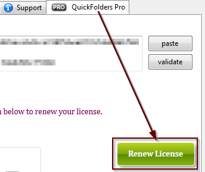
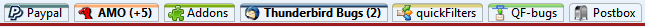
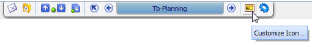
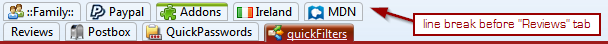
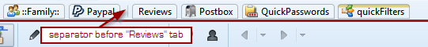
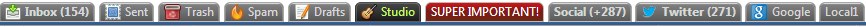

QuickFolders.org
| Home Installation Version History Premium Functions FAQ + Tips Support QuickFolders! Screenshots Bugs + Feature Requests Premium Functions |
QuickFolders Pro : Premium Features
|
RENEW YOUR QUICKFOLDERS PRO LICENSE IN TIME QuickFolder Pro users: If your license is expired there will be renewal links and buttons in the application. Using them you can buy a new license at a reduced price. Support the future development of QuickFolders and save money while enjoying unlimited Premium Features. The Renewal can only be bought by clicking the [renew license] button on the QuickFolders Pro tab in the Options dialog. For Renewal of a Domain license please contact me directly. |
 |
Premium features are power functions which are an incentive for users to regularly support the QuickFolders project through a yearly contribution, called QuickFolders Pro license. My aim is that instead of very few people trying to carry the project with sometimes large donations to try involving more supporters. It is a lot of work to keep the project going and up to date with all the latest code changes which happen every four(!) weeks on the Mozilla code base. Staying in sync with the three complex applications (Thunderbird, Postbox and SeaMonkey) and to support multiple OS platforms (Windows, Linux and Mac) and 18 languages, writing support emails and fixing bugs is actually a big amount of work. I would rather actually spend more time on this than just burning away my weekends, but for this it needs to be financially viable.
See the support page on how to obtain a license.
Standard Features
Unlike the unfunded version, QuickFolders Standard has no restriction in the number of QuickFolders tabs you can create. It also improves the following features:
- quickMove / quickJump: when this button is clicked there is no more sliding notification that this is a premium feature. You will still need a Pro license in order to use and customize your own keyboard shorcuts and advanced search features.
- The reading list can be used to store locations (up to 10) of your most important different emails. This number is unrestricted with a Pro license.
Feature Comparison
| Features | Unlicensed version | Standard License | Pro License |
|---|---|---|---|
| Max Number of tabs | 10 | 25 | unlimited |
| Max Reading List entries | 5 | 10 | unlimited |
| Advanced / Paste Folders from Clipboard | ✘ | ✔ | ✔ |
| Save Configuration | ✘ | ✔ | ✔ |
| Load Configuration | ✘ | ✔ | ✔ |
| Skip unread folder | ✘ | ✔ | ✔ + keyboard shortcut |
| quickJump / quickMove | ✘ Demo mode only. |
✔ | ✔ + keyboard shortcuts |
| Advanced Search Settings | ✘ | ✘ | ✔ |
| Tab / Folder Icons | 6 | 12 | unlimited |
| tab separators / line breaks | ✘ | ✘ | ✔ |
| Advanced Folder Properties: default From address | ✘ | ✔ | ✔ + recursive to all subfolders |
| Advanced Folder Properties: default To address | ✘ | ✔ | ✔ + recursive to all subfolders |
Which Premium Features exist?
Here is a list of Premium features that are unrestricted to licensed users.
For non-licensed users, the premium features can be restricted and, when used, will show a notification bar in order to promote buying a license. I feel this is the best way as it gives you a chance to try them out and get an idea on what other great future functionality will be funded by supporters:
| Feature | Description |
|---|---|
| quickMove |
Allows moving mail to any folder by entering one or two letters
(part of the folder name). This is very useful when we have lots of folders.
Drag the mails to the quickMove button and then start typing. Hit ESC to hide the panel.
Right click for more options and a list of messages lined up for moving.
With the Premium version you can also use and configure a keyboard shortcut - by default this is SHIFT+M. In Postbox you might want to redefine this to a different Letter as this is bound to "recorded Mark Message as Pending/Not Pending": for choosing an alternative, see Postbox Shortcuts |
| quickCopy (4.2) |
Same as quickMove, but use for copying mail. Hold CTRL when dragging the mails mails to
the quickMove button and then start typing.
With the QuickFolders Pro, you can also use and configure a keyboard shortcut - by default this is SHIFT+T. |
| quickJump |
Similar to quickMove and using the same button, click the quickJump button and type a folder name to go there immediately.
Hit ESC to cancel.
With the QuickFolders Pro, you can also use and configure a keyboard shortcut - by default this is SHIFT+J. In Postbox you might want to redefine this to a different Letter as this is bound to "Mark as Not Junk". |
| Advanced Search settings |
Additional settings for the search results that are displayed during quickJump / quickMove:

|
| Autofill last folder | Enhances the quickMove / quickJump functions by automatically filling with the last successfully used folder name.
The name of last folder successfully navigated by quickMove / quickJump will be inserted in the quickMove search field automatically.
In most cases, through generating a unique single folder match you can just hit [Enter] to repeat the move mail action or jump into the folder you last moved mail to, or simply type
over it to go to a different destination.
You can also use the "Slash" character for selecting subfolders that have the same name - e.g. "AC/bills" to select Account1/bills will expand to "Account1/bills" after using quickMove / quickJump and then used in autofill to avoid selecting "Account2/bills" "Customer1/bills". |
| Skip (Unread) Folder |
Skip an unread folder with a single click
This new button makes navigating the unread emails a breeze.
No time to look at your social media subscriptions, you just want to move on
to the next important unread email? Simply click this button and jump onwards.
Only when everything else is done, hurray, watch the next video or read the next tweet! |
| Tab Icons |
Some help for the eyesYou can now add customized icons to every QuickFolder tab. In Thunderbird this icon will also be shown in the folder tree. The easiest way to do this is using the yellow "Image Icon" on the current folder tab while are in the folder:  To get started, you can download a selection of (16px2) icons here: http://quickfolders.org/downloads/quickFoldersIcons.zip - these are mostly favicons from websites but also some of the fabulous fugue icon set by http://p.yusukekamiyamane.com/. These are shared under fair use there I not own or transfer any rights for re-using them. For creating you own from any website, navigate to http://www.google.com/s2/favicons?domain=websitename - simply replace websitename with the URL of the site, e.g. youtube.com. With the free version of QuickFolders, the number of icons is restricted to 12. |
| Reading List |
A bookmark for the whole library "Reading List" Icon for storing bookmarks for important mails.
Drag an email to this button and QuickFolders remembers it for you, without having
to keep a mail
tab permanently open.
"Reading List" Icon for storing bookmarks for important mails.
Drag an email to this button and QuickFolders remembers it for you, without having
to keep a mail
tab permanently open.
Hold down SHIFT while clicking to open a new window, and hold CTRL to open a new tab for the email. Right-click any entry you want to remove. To test drive this feature, the free version allows adding up to 5 of these. |
| Line Breaks |  You can now insert a line break before any tab in order to show another row of tabs. To remove the line break, you right-click the first tab in the line and select QuickFolders Commands > Remove Line Break |
| Separators |  You can now insert a separator before any tab in order to indicate a new group of tabs. To remove the line separator, you right-click the tab to the right of it and select QuickFolders Commands > Remove Separator |
| Tab-specific Properties |
Supercharge your most important folders
This powerful feature allows you to determine specific exceptions to invidual tabs:
You can hide its unread status or mail count (which might be helpful for draft and sent folders) set default mail addresses
and add other specific features such as a different palette or customized colors.
For a customized background I highly recommend using a linear gradient CSS rule -
for your convenience I added a link to the
Ultimate CSS Gradient Generator from Colorzilla.
Simply click the button beside the text field to create your own gradient and then copy the W3C specific rule e.g.
Customized Folder
Or select a different palette from what you are using for your other colored tabs, for that super important VIP folder, and then select that satisfying, bright red: Setting default To Email address and From Identity for creating new mails when in a folder makes it easier when we store email from different identities in the same mailbox (e.g. Local Folders). For example: You can now configure your desired sender identity for each of your mailing lists. Or select a default recipient for when you write a new email from a folder. |
| Tree Key | Use the new folder tree shortcut [F9] in order to hide / show the folder tree |
| Child Folders |
An easy & quick way to create / navigate child foldersUsing the quickJump / quickMove functions - create child folder command. Enter parent folder name (or partially) then press the forward slash key [/] to type name of the child folder. In QuickFolders Pro it's as simple as hitting SHIFT+M (Move) or SHIFT+J (Jump) - here is a detailed demonstration: |
| Backup / Restore |
[Bug 24468] Backup and restore functions - these can also be used to transfer your tabs to a different Computer or copy to another profile. Save Configuration will store everything including all QuickFolders Tabs, general settings, layout and advanced settings. The later includes advanced settings except for the license key. Load Configuration will only load whatever option you select. 
If a tab is found which points to a non-existing folder destination this will be highlighted with a "broom" icon - those invalid tabs can be removed using the "Find orphaned Tabs" command on the tool menu. This feature can potentially be used to synchronise tabs on another Computer, but this will only work if the account name is the same during creation on Thunderbird. This is a technical limitation of the built in naming mechanism for mail folder URLs. Thereforce I cannot currently support synchronising QuickFolders across various profiles. The safest and easiest way to do this would be by copying the complete profile folder over to the new PC - then synchronizing via Backup / Restore files should be feasible. |
| ... | More premium features will be added over time - you can also request new features here... |

Other Benefits of having a Yearly License
You know that you support the project and that the development and support will be continue. There is a huge amount of work involved not just programming and keeping QuickFolders up to date but also supporting users, coming up with better ways of doing things, fixing bugs, and keeping QuickFolders usable across various platforms and host programs (at the moment we support Thunderbird, SeaMonkey and Postbox). I am constantly helping people with using QuickFolders and their mail program and how to get the most out of email on the desktop.
The donation screen (which is normally shown after an Update) is hidden.
Alternative Monetisation Models
There are quite a few software developers (and also some users) who believe that software should generally financed by advertisement or even by selling user information. I am firmly opposed to this way of making money as it impacts both productivity and privacy rights; also in the world of Email I would find this way of generating value deeply problematic - even if it was strictly opt-in. There is a lot of personal information in our daily mail and a lot of knowledge that is being stored and retrieved with this powerful tool.
One of the reasons for a personal Email Client on the desktop is the fact that we can store our data on our personal hardware and use it any way we like. On the other hand, if we use a web mail client (like gmail) we can never be sure whether the information is used otherwise and whether we get targeted with distracting information (be it by injecting advertisements or via targeted advertisement emails) - it is one of the goals of any mail desktop client to eliminiate these distractions as much as possible, and focus on one thing only: managing communication.
QuickFolders is an especially powerful set of tools to harness this information and it will evolve and keep saving time and make your experience of mail more meaningful and intuitive.